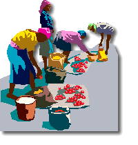

Ronnie Sim

El swahili pertenece a una gran familia de lenguas llamada bantú. Las lenguas bantúes las hablan más de 100 millones de personas en el sur y el este de África. El swahili es la lengua materna de unos 5 millones de personas, y es la lengua común del comercio en buena parte de la costa oriental de África. Sin embargo, la variedad de swahili de este acertijo se habla a cientos de kilómetros tierra adentro, y es bastante diferente de la que se habla cerca de la costa.
Tu tarea es sencilla. Lee las primeras diez palabras en swahili con sus traducciones. Luego escribe las palabras en swahili que corresponden a las últimas tres traducciones:
| 1. Ninasema. | 'Yo hablo.' |
| 2. Wunasema. | 'Tú hablas.' |
| 3. Anasema. | 'Ella habla.' |
| 4. Wanasema. | 'Ellos hablan.' |
| 5. Ninaona. | 'Yo veo.' |
| 6. Niliona. | 'Yo vi.' |
| 7. Ninawaona. | 'Yo los veo.' |
| 8. Niliwuona. | 'Yo te vi.' |
| 9. Ananiona. | 'Ella me ve.' |
| 10. Wutakaniona. | 'Tú me verás.' |